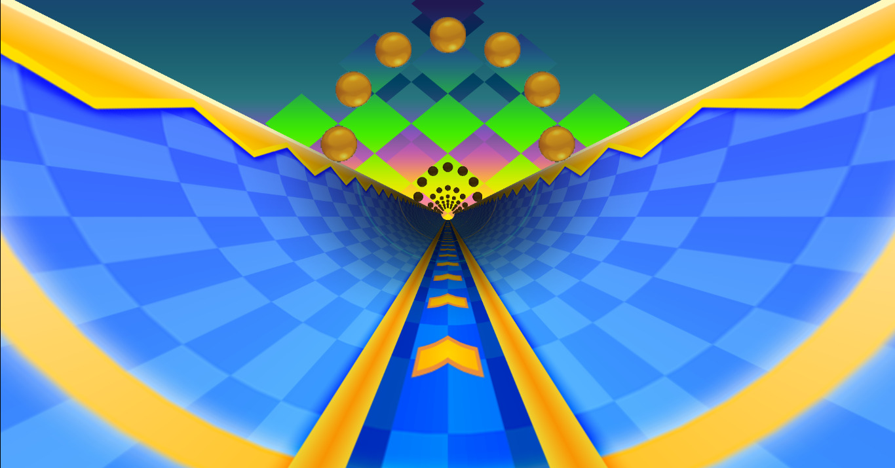
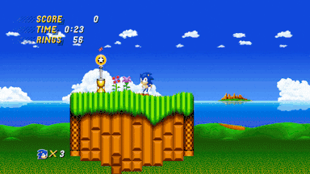
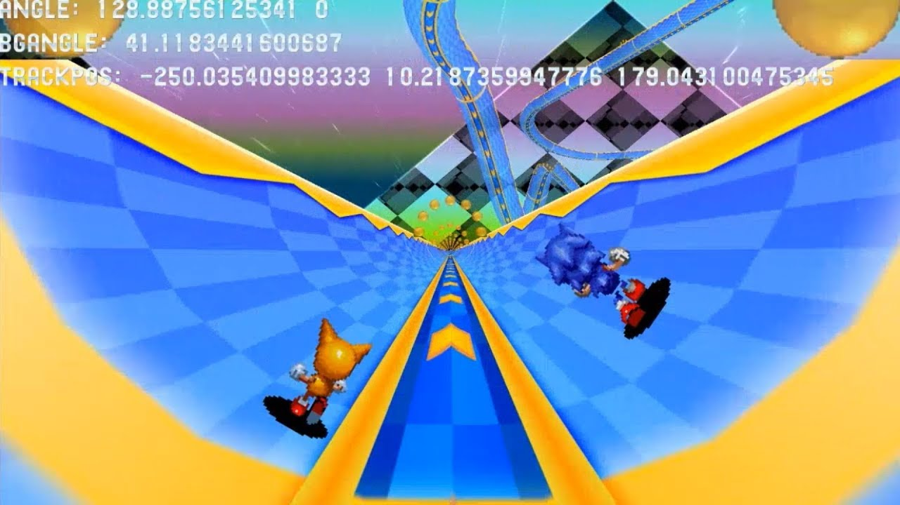

Sonic 2 HD
Note: Most materials shown for this project were recorded casually during development, and rescued from a dying hard drive; as such, they may not be ideal demonstrations of my work on the project.
In mid-2019 I joined the team working on Sonic 2 HD, an ambitious fan reimagining of the classic Sega Genesis title, as a programmer. I was chosen through demonstrating my reverse engineering skills, such as decompiling the game's .NET bytecode to modify it for myself, as well as porting some of the original game's 68k assembly code to C#.

A lot of my initial work was on the audio system; I implemented stereo sound and a pitch and panning system for sound effects, as well as a dynamic track switching and looping system for the music.
But my biggest contribution to the game's development involved laying the groundwork for the visuals of the game's Special Stages. What was once a 2D background with perspective tricks is now a full 3D scene, with objects positioned in three axes instead of two. When I first joined the team, there was already some work done on a procedural 3D renderer that generated polygons on the fly based on the original game's data, but it was very simple and offered a very limited view of the stage. I thought we could do better than this.

One of the main goals I wanted to achieve with the new renderer was for the player to be able to see the twists and turns of the rest of the track in the distance as they went through the stage; The main draw of the stages in the original was their 3D look and being able to look ahead of you, so it felt like a natural step forward. At the time though, the renderer was only designed to generate the track relative to where you were in it. Achieving a fully-visible Special Stage then would require a lot more work...

I ended up doing an almost complete rewrite of the renderer; I wrote my own spatial hash implementation and camera class in order to cull geometry, and rewrote our geometry generator to calculate all vertices only once at load time. Along with some extra shaders I integrated into the renderer, it provided an incomplete, but still more engaging visual demonstration of what the game could do to give a classic scene a modern coat of paint.